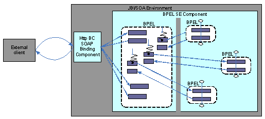
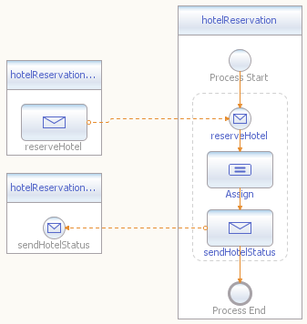
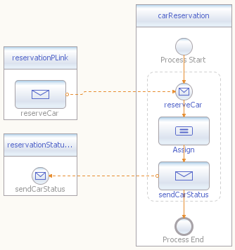
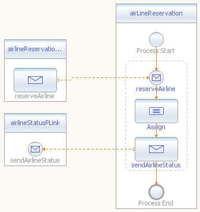

Kiran Bhumana, Ryan Kennedy, Shauna Pickett-Gordon
Complex applications need concurrent execution capability, and today's programming languages have evolved to support concurrency. The BPEL language defines concurrency constructs and, in particular, certain synchronized constructs. Thus, developers can concentrate more on designing the business logic of their BPEL processes, and less on writing complex concurrency execution code.
This BluePrint focuses on the design aspects and common usage patterns of concurrency constructs. In our scenario, the BPEL business process coordinates concurrent events. The process initiates, requests a reservation from multiple systems, and waits for the partners to simultaneously accept the messages within a specified time.
The BPEL construct Flow lets you define multiple
execution paths. In a pick activity (which is described
in the fourth BluePrint), one
path is chosen. In a Flow activity, all the path branches
are executed concurrently.
BPEL also defines a synchronization construct called a Flow
Link.
This construct enables serialized execution within the Flow branches.
In addition, BPEL defines the concurrency constructs EventHandler
and forEach. This BluePrint does not cover these
constructs in depth, but briefly mentions their design considerations.
Correlation is used in this BluePrint. If you're not familiar with correlation, see the second BluePrint.
The main BPEL process provisions a reservation order request and consumes reservations from three subsystems. The process also provisions a callback to coordinate the three asynchronous responses from the subsystems' reservation services. See the first BluePrint for details on asynchronous servicing.
The reservation and the subsystems' reservation services are provisioned by BPEL services within the same BPEL Service Engine component. An external client consumes the reservation service, and the binding is implemented in SOAP over HTTP.
Three reservation subsystems--airline, hotel, and car--are used in this scenario. Our use case doesn't explain the very complex details of a typical reservation system that would involve external partner services. Instead, the emphasis is on the usage patterns of a BPEL process in such an asynchronous, concurrent coordination of events.

Figure 1: Concurrent and Asynchronous Service Implementation
The following BPEL constructs are used in this scenario:
flow construct. pick onMessage and onAlarm
constructs. See the second and fourth BluePrints for details. This pattern shows how concurrent asynchronous consumption and provisioning of services might be used in a typical, real-world scenario. The scenario involves four services; in addition, three callback services provide the asynchronous behavior.
The main reservation service is consumed by an external client through SOAP over HTTP. This reservation service orchestrates other services, specifically three subsystem reservation services and three callback services that asynchronously return the result of the subsystem's reservation.
An external client consumes a reservation service implemented by the
ReservationSystem BPEL process. When ReservationSystem
receives the request, the process initializes the correlation ID, does
some data massaging, and then invokes all three subsystems. All the
subsystems are invoked concurrently, and responses from the subsystems
are expected in a concurrent fashion. Since the responses are
asynchronous, a time-triggered execution path ensures an alternative
execution path in case of a missing response.
The main BPEL process, ReservationSystem,
orchestrates the three subsystem reservation services: AirLineReservation,
CarReservation, and HotelReservation.
The presence of a string "book_airline", "book_car" and
"book_hotel" in the description field of the reservation request
message will result in respective successful reservations. Refer to the
input data section.
WSDL definitions follow for ReservationSystem, HotelReservation,
CarReservation, and AirLineReservation.
ReservationSystem
The ReservationSystem WSDL defines the main
reservation service, which provisions a synchronous reserve
operation.
<portType name="doReservePortType">
<operation name="reserve">
<input name="reserveMesg"
message="tns:reserveMesg"></input>
<output name="reservationStatus"
message="tns:reservationStatus"></output>
<fault name="reservationFailed"
message="tns:reservationFailed"></fault>
</operation>
</portType>
The ReservationSystem WSDL
defines a property,
a reservationID, and a propertyAlias that
ties reservationID to a value defined in the received
message.
<bpws:property name="reservationID" type="xsd:long"></bpws:property>
<bpws:propertyAlias part="reservePart"
propertyName="tns:reservationID"
messageType="tns:reserveMesg">
<bpws:query>/reserve/reservationID</bpws:query>
</bpws:propertyAlias>
HotelReservation
The HotelReservation WSDL
defines the following service. Notice that two of
HotelReservation's operations support the asynchronous
interaction with this service.
<portType name="HotelReservationPortType">
<operation name="reserveHotel">
<input name="reserveMesg"
message="tns:HotelReservation"></input>
</operation>
</portType>
<portType name="HotelStatusPortType">
<operation name="sendHotelStatus">
<input name="statusMesg"
message="tns:HotelReservationStatus"></input>
</operation>
</portType>
Next, the HotelReservation
WSDL defines a propertyAlias
and associates it with the ReservationSystem WSDL's property reservationID.
<bpws:propertyAlias part="status"
propertyName="res:reservationID"
messageType="tns:HotelReservationStatus">
<bpws:query>/reserveStatus/reservationID</bpws:query>
</bpws:propertyAlias>
Notice that the property
associated with this propertyAlias
is defined in the Reservation WSDL.
CarReservationThe
CarReservation WSDL defines the following
service.
Again, this WSDL defines two operations that support asynchronous
interactions with this service.
<portType name="CarReservationPortType">
<operation name="reserveCar">
<input name="reserveMesg"
message="tns:CarReservation"></input>
</operation>
</portType>
<portType name="CarStatusPortType">
<operation name="sendCarStatus">
<input name="statusMesg"
message="tns:CarReservationStatus"></input>
</operation>
</portType>
The CarReservation WSDL
defines a propertyAlias
and associates it with the ReservationSystem WSDL's property reservationID.
<bpws:propertyAlias part="status"
propertyName="res:reservationID"
messageType="tns:CarReservationStatus">
<bpws:query>/reserveStatus/reservationID</bpws:query>
</bpws:propertyAlias>
Notice that the property associated with
this property alias is
defined in the ReservationSystem WSDL.
AirLineReservation
AirLineReservation WSDL defines the following
service, which also supports asynchronous interactions.
<portType name="AirlineReservationPortType">
<operation name="reserveAirline">
<input name="reserveMesg"
message="tns:AirlineReservation"></input>
</operation>
</portType>
<portType name="AirlineStatusPortType">
<operation name="sendAirlineStatus">
<input name="statusMesg"
message="tns:AirlineReservationStatus"></input>
</operation>
</portType>
This AirLineReservation WSDL
defines a propertyAlias and associates it with the
ReservationSystem WSDL's property reservationID.
<bpws:propertyAlias part="status"
propertyName="res:reservationID"
messageType="tns:AirlineReservationStatus">
<bpws:query>/reserveStatus/reservationID</bpws:query>
</bpws:propertyAlias>
Notice that the property
associated with this propertyAlias
is defined in the ReservationSystem WSDL.
See the first and second BluePrints for more information on specifying WSDL for BPEL processes.
The ReservationService BPEL process uses correlation
to route messages to the appropriate process instance. The value of reservationID
in the reserveMesg message is used as the correlation
identifier.
Here, we define a correlationSet on the reservationID
property.
<correlationSets>
<correlationSet name="reservationCorrelationSet"
properties="ns0:reservationID "/>
</correlationSets>
Correlation is initialized here, and when the receive
is executed, a unique ID is associated with the ReservationService
process instance.
<receive name="reserve"
partnerLink="reservationPLink"
portType="ns0:doReservePortType"
operation="reserve"
variable="reserve"
createInstance="yes">
<correlations>
<correlation set="reservationCorrelationSet"
initiate="yes"/>
</correlations>
</receive>
Asynchronous responses from the reservation subsystems are routed to
the correct instance with the usage of correlation. The following BPEL
code
snippet routes the HotelReservation response to the
correct Reservation system instance.
<onMessage partnerLink="hotelReservationStatusPLink"
portType="ns3:HotelStatusPortType"
operation="sendHotelStatus"
variable="hotelStatusVar"
sbynpx:lineLabel="Message Event">
<correlations>
<correlation set="reservationCorrelationSet"
initiate="no"/>
</correlations>
...
</onMessage>
In the same way, correlation is used to route the AirlineReservation
and CarReservation responses.
The reservation subsystems are called concurrently from the main ReservationService
process. The following BPEL code snippet makes these concurrent
calls. Note that the sequences in the flow activity are
executed in
parallel.
<flow name="Flow2">
<invoke name="reserveAirline"
partnerLink="airlineReservation"
portType="ns1:AirlineReservationPortType"
operation="reserveAirline"
inputVariable="reserveAirlineVar"></invoke>
<invoke name="reserveCar"
partnerLink="carReservationPLink"
portType="ns2:CarReservationPortType"
operation="reserveCar"
inputVariable="reserveCarVar"></invoke>
<invoke name="reserveHotel"
partnerLink="hoteReservationPLink"
portType="ns3:HotelReservationPortType"
operation="reserveHotel"
inputVariable="reserveHotelVar"></invoke>
</flow>
Similarly, another flow construct is used to receive
messages concurrently. See the BPEL source code for details on using
the flow construct in this example.
Notice that there are other ways of using BPEL to achieve the same
functionality. For instance, in another example, a developer could use
just one flow construct, while this example uses two.
Click on the folllowing image for a visual representation of the ReservationSystem BPEL process. For
implementation details, see the source
files.
Figure 2: The ReservationSystem BPEL Process
The following diagrams illustrate the subsystem reservation services
referenced in this BluePrint.

Figure 3: The HotelReservation
BPEL Process

Figure 4: The CarReservation
BPEL Process

Figure 5: The AirLineReservation BPEL Process
partnerLinks.
Such updates have unpredictable results.Flow links can be used to synchronize sections of
the concurrent execution. However, take extra caution to avoid deadlock
situations.eventHandlers resemble the pick
syntax. They are associated with the scope or the BPEL's process
element, which itself can be also be viewed as one of the scopes.
Execution of the scope enables these eventHandlers,
because they are executed concurrently with the main thread of
execution. You could, for example, use eventHandlers to
obtain the status of a particular instance's execution, or to trigger
an abort event.forEach can be viewed as
a dynamic flow construct. While flow
defines the number of branches and the behavior of each branch almost
statically, forEach defines much of this dynamically. <soapenv:Envelope xmlns:soapenv="http://schemas.xmlsoap.org/soap/envelope/"
xmlns:res="http://ReservationSystem.org/xsd/reserve" xmlns:xsi="http://www.w3.org/2001/XMLSchema-instance"
xsi:schemaLocation="http://schemas.xmlsoap.org/soap/envelope/ http://schemas.xmlsoap.org/soap/envelope/">
<soapenv:Body>
<res:reserve>
<res:reservationID>0000098761</res:reservationID>
<res:description>book_car, book_hotel, book_airline</res:description>
</res:reserve>
</soapenv:Body>
</soapenv:Envelope>
<?xml version="1.0" encoding="UTF-8"?>
<SOAP-ENV:Envelope xmlns:SOAP-ENV="http://schemas.xmlsoap.org/soap/envelope/"
xmlns:xsd="http://www.w3.org/2001/XMLSchema" xmlns:xsi="http://www.w3.org/2001/XMLSchema-instance"
xsi:schemaLocation="http://schemas.xmlsoap.org/soap/envelope/ http://schemas.xmlsoap.org/soap/envelope/">
<SOAP-ENV:Header/>
<SOAP-ENV:Body>
<reservationStatusOfAll xmlns="http://ReservationSystem.org/xsd/reserve">
<airlineStatus>true</airlineStatus>
<hotelStatus>true</hotelStatus>
<carStatus>true</carStatus>
</reservationStatusOfAll>
</SOAP-ENV:Body>
</SOAP-ENV:Envelope>
<soapenv:Envelope xmlns:soapenv="http://schemas.xmlsoap.org/soap/envelope/"
xmlns:res="http://ReservationSystem.org/xsd/reserve" xmlns:xsi="http://www.w3.org/2001/XMLSchema-instance"
xsi:schemaLocation="http://schemas.xmlsoap.org/soap/envelope/ http://schemas.xmlsoap.org/soap/envelope/">
<soapenv:Body>
<res:reserve>
<res:reservationID>0000098762</res:reservationID>
<res:description>book_airline</res:description>
</res:reserve>
</soapenv:Body>
</soapenv:Envelope>
{kind=link}